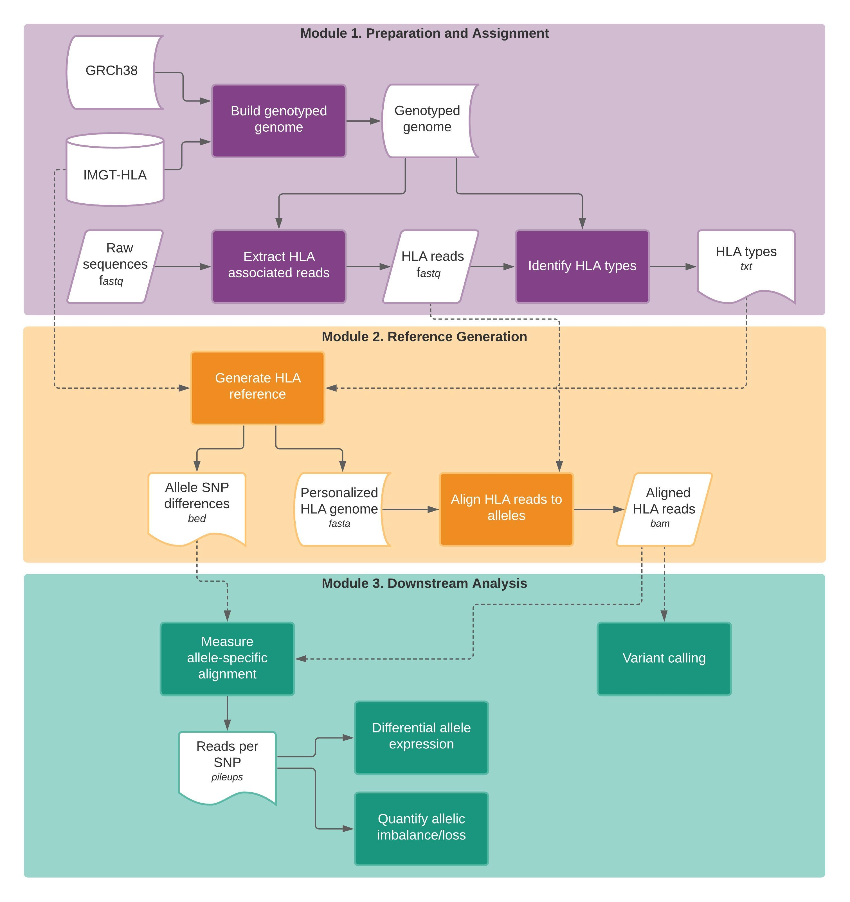

Analysis¶
{kind=link}
Module 1. Preparation and assignment¶
HLA read extraction¶
Reads associated with the HLA gene loci are extracted using HISAT-genotype. The hisatgenotype_extract_reads file has been modified to work with either DNA or RNA sequencing reads (enabling split-read sequence alignment through HISAT2).
Extract HLA-associated reads from DNA sequencing data:
export PATH=/opt/hisat2/hisat2-hisat2_v2.2.0_beta:/opt/hisat2/hisat2-hisat2_v2.2.0_beta/hisatgenotype_scripts:$PATH
export PYTHONPATH=/opt/hisat2/hisat2-hisat2_v2.2.0_beta/hisatgenotype_modules:$PYTHONPATH
export PATH=$PATH:/opt/samtools/bin
/opt/hisat2/hisat2-hisat2_v2.2.0_beta/hisatgenotype_extract_reads_v_KC.py --base ${hisat_prefix} \
-1 ${fq1} -2 ${fq2} --database-list hla
To extract HLA-associated reads from RNA sequencing data, just add the --is-rna flag to the command:
export PATH=/opt/hisat2/hisat2-hisat2_v2.2.0_beta:/opt/hisat2/hisat2-hisat2_v2.2.0_beta/hisatgenotype_scripts:$PATH
export PYTHONPATH=/opt/hisat2/hisat2-hisat2_v2.2.0_beta/hisatgenotype_modules:$PYTHONPATH
export PATH=$PATH:/opt/samtools/bin
/opt/hisat2/hisat2-hisat2_v2.2.0_beta/hisatgenotype_extract_reads_v_KC.py --base ${hisat_prefix} \
-1 ${fq1} -2 ${fq2} --is-rna --database-list hla
Reads may also be extracted from single reads, using the -U option instead of paired -1 and -2 reads:
export PATH=/opt/hisat2/hisat2-hisat2_v2.2.0_beta:/opt/hisat2/hisat2-hisat2_v2.2.0_beta/hisatgenotype_scripts:$PATH
export PYTHONPATH=/opt/hisat2/hisat2-hisat2_v2.2.0_beta/hisatgenotype_modules:$PYTHONPATH
export PATH=$PATH:/opt/samtools/bin
/opt/hisat2/hisat2-hisat2_v2.2.0_beta/hisatgenotype_extract_reads_v_KC.py --base ${hisat_prefix} \
-U ${fq1} --is-rna --database-list hla
HLA typing¶
HLA typing can be applied to 26 genes, spanning 7Mb in chromosome 6p21.3, including classical and non-classical Class I/II HLA genes, non-expressed Class I HLA pseudogenes, ATP binding cassette transporter genes, Class I chain-related and Class I-like genes: HLA-A, HLA-B, HLA-C, HLA-DMA, HLA-DMB, HLA-DOA, HLA-DOB, HLA-DPA1, HLA-DPB1, HLA-DPB2, HLA-DQA1, HLA-DQB1, HLA-DRA, HLA-DRB1, HLA-E, HLA-F, HLA-G, HLA-H, HFE, HLA-K, HLA-L, MICA, MICB, TAP1, TAP2, and HLA-V. These are specified as a comma-delimited list in the following HLA typing command by the –locus-list option.
Note
Do not include “HLA-” when specifying HLA genes (e.g. use --locus-list A instead of --locus-list HLA-A). Typing generally takes the longest on the HLA-A locus, and this command can be scattered across each loci individually, followed by report aggregation and summary (See Analysis > Suggested Workflow).
Docker Commands (kcampbel/rnaseq_methods:v3):
export PATH=/opt/hisat2/hisat2-hisat2_v2.2.0_beta:/opt/hisat2/hisat2-hisat2_v2.2.0_beta/hisatgenotype_scripts:$PATH
export PYTHONPATH=/opt/hisat2/hisat2-hisat2_v2.2.0_beta/hisatgenotype_modules:$PYTHONPATH
export PATH=$PATH:/opt/samtools/bin
/opt/hisat2/hisat2-hisat2_v2.2.0_beta/hisatgenotype_locus_v_KC.py --genotype-genome ${hisat_prefix} \
-1 ${fq1} -- ${fq2} --base hla --locus-list ${locus} --output-base ${name}.${locus} --keep-low-abundance-alleles
Options for single-read sequencing (U) and RNA sequencing (--is-rna) can also be used for HLA typing.
Module 2. Reference Generation¶
HISAT-genotype will output a ranked list of HLA types for each locus, based upon those that meet the expectation maximization algorithm. Documentation for HISAT-genotype suggests using the alleles ranked 1 or 2, from hisatgenotype_locus.py for each gene, and the alleles may be reported up to the 4th field of resolution, which describes genomic differences in alleles outside of the coding regions. However, WES may not have sufficient sequencing coverage and RNAseq data would not be appropriate for detecting this level of information. HLA-HAT provides an R script to summarize the HLA typing reports from HISAT-genotype.
HLA haplotype reporting¶
Aggregate all report files using the following command:
grep "ranked" *report > ${name}.hla_types.txt
The generate_reference_files.R script is used to generate the reference fasta, and can be specified in the Docker container kcampbel/hlahat_r:v3:
Rscript /code/generate_reference_files.R ${name} ${name}.hla_types.txt ${n_fields} ${sep="," gen_msf_list} ${sep="," nuc_msf_list}
| Parameter | Type | Description |
|---|---|---|
| name | String | Identifier (prefix) for output files |
| hlatypes_file | File | Path to file containing the ranked text output from HISAT-genotype (Called ${name}.hlatypes.txt from previous grep command) |
| n_fields | Int | Number of fields to include in HLA type output (current options: 2 or 3) |
| gen_msf_list | File list | Comma-delimited list of file paths for gen.msf files from IMGT-HLA |
| nuc_msf_list | File list | Comma-delimited list of file paths for nuc.msf files from IMGT-HLA |
The R script generate_reference_files.R is provided for summarizing the HLA typing performed by HISAT-genotype, and outputs the following files:
all_hlatypes.tsvIncludes all ranked types outputted by HISAT-genotype.top_hlatypes.tsvSummarizes the top ranked 1-2 alleles, which are used for subsequent custom reference genome generation.find_hlatypes.tsvSummarizes the individual-specific HLA reference, including which genomic DNA and CDS are aclosest and available for the HLA haplotype of the patient. Note that the genomic DNA sequence is not available for all HLA types.custom_hla.fastaReference file containing the genomic DNA sequences of the Individual reference allelescustom_hla.allelic_differences.bedIncludes a bed file of all SNP differences between alleles in heterozygous genes, mapped tocustom_hla.fastareference
The ${id}.all_types.tsv file includes all alleles ranked by HISAT-genotype; however, sometimes this list includes more than two ranked HLA alleles (Based upon the shared sequence homology across alleles). Thus, all_hlatypes is reduced to top_hlatypes based upon the percentage abundance quantitation, and annotated by find_hlatypes based upon the genomic DNA and CDS sequences available. Note that IMGT-HLA does not provide genomic DNA sequences for all HLA alleles, but many common types are accounted for.
By default, all alleles are reduced to their fullest up the third field of resolution (e.g. A*02:89 would remain A*02:89, while A*03:01:01:01 is reduced to A*03:01:01). Then, alleles up to the third field of resolution are summarized by the maximum percent abundance across those that are shared. Any alleles with less than 5% abundance are removed, and then the remaining one or top two alleles (at the third field of resolution) are chosen as the HLA types.
Example: If the following Class I alleles are ranked in the report from HISAT-genotype, {id}.all_types.tsv file would be outputted:
| ranks | alleles | gene | perc_abundance |
|---|---|---|---|
| 1 | A*02:01:01:01 | A | 40.85 |
| 2 | A*33:01:01 | A | 31.63 |
| 3 | A*33:03:23 | A | 13.97 |
| 4 | A*34:01:01 | A | 4.52 |
| 5 | A*34:05 | A | 4.52 |
| 6 | A*34:14 | A | 4.52 |
| 1 | B*14:02:01:01 | B | 50.79 |
| 2 | B*15:01:01:01 | B | 37.33 |
| 3 | B*15:01:01:03 | B | 11.87 |
| 1 | C*08:02:01:01 | C | 51.18 |
| 2 | C*03:03:01:01 | C | 48.82 |
generate_reference_files performs the following filtering, to report the HLA haplotypes. First, alleles are summarized to the third field of resolution:
| ranks | alleles | gene | perc_abundance |
|---|---|---|---|
| 1 | A*02:01:01 | A | 40.85 |
| 2 | A*33:01:01 | A | 31.63 |
| 3 | A*33:03:23 | A | 13.97 |
| 4 | A*34:01:01 | A | 4.52 |
| 5 | A*34:05 | A | 4.52 |
| 6 | A*34:14 | A | 4.52 |
| 1 | B*14:02:01 | B | 50.79 |
| 2 | B*15:01:01 | B | 37.33 |
| 3 | B*15:01:01 | B | 11.87 |
| 1 | C*08:02:01 | C | 51.18 |
| 2 | C*03:03:01 | C | 48.82 |
Alleles are summarized by the maximum percent abundance corresponding to each unique allele at the third field of resolution:
| ranks | alleles | gene | perc_abundance |
|---|---|---|---|
| 1 | A*02:01:01 | A | 40.85 |
| 2 | A*33:01:01 | A | 31.63 |
| 3 | A*33:03:23 | A | 13.97 |
| 4 | A*34:01:01 | A | 4.52 |
| 5 | A*34:05 | A | 4.52 |
| 6 | A*34:14 | A | 4.52 |
| 1 | B*14:02:01 | B | 50.79 |
| 2 | B*15:01:01 | B | 37.33 |
| 1 | C*08:02:01 | C | 51.18 |
| 2 | C*03:03:01 | C | 48.82 |
Alleles with less than 5% abundance are removed:
| ranks | alleles | gene | perc_abundance |
|---|---|---|---|
| 1 | A*02:01:01 | A | 40.85 |
| 2 | A*33:01:01 | A | 31.63 |
| 3 | A*33:03:23 | A | 13.97 |
| 1 | B*14:02:01 | B | 50.79 |
| 2 | B*15:01:01 | B | 37.33 |
| 1 | C*08:02:01 | C | 51.18 |
| 2 | C*03:03:01 | C | 48.82 |
Finally, the top 1-2 ranked alleles are identified as the patient HLA type, and summarized in the {id}.top_haplotypes.tsv file:
| ranks | alleles | gene | perc_abundance |
|---|---|---|---|
| 1 | A*02:01:01 | A | 40.85 |
| 2 | A*33:01:01 | A | 31.63 |
| 1 | B*14:02:01 | B | 50.79 |
| 2 | B*15:01:01 | B | 37.33 |
| 1 | C*08:02:01 | C | 51.18 |
| 2 | C*03:03:01 | C | 48.82 |
Create HLA reference FASTA¶
generate_reference_files takes the HLA alleles typed in the top_haplotypes file and by cross-referencing the multiple sequence files (msf) obtained from IMGT-HLA, generates a genomic DNA reference fasta, with contigs associated with each allele.